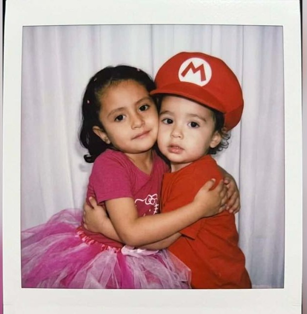

Un libro escrito por ti milito, con cada latido que tú me enseñaste a sentir desde lejos
Hay algo que nadie te prepara para sentir, el momento exacto en que una persona deja de ser alguien más en el mundo y se convierte en tu mundo entero. Y lo más curioso de todo es que eso me pasó a mí, Camilo, estando lejos de ti, Brissia. No fue un instante de los que salen en las películas, donde dos personas se encuentran y las miradas lo dicen todo. Fue algo que creció despacio, en pantallas encendidas a deshoras, en mensajes que llegaban justo cuando más los necesitaba, en risas que viajaban kilómetros para llegar a mí y aun así llegaban cargadas de toda su calidez.
El amor que siento por ti no cabe en las palabras que aprendí de canciones o poemas. Es algo más parecido al silencio de la madrugada cuando todo el mundo duerme y yo pienso en ti, Brissia, que estás en otro lugar del mundo respirando, siendo, existiendo en la misma realidad que yo aunque separados por una distancia que a veces duele y otras veces simplemente es. No es el amor cómodo de quien tiene al otro al alcance de la mano; es un amor que se gana todos los días con elección consciente, con paciencia, con la certeza de que lo que hay entre nosotros vale cada kilómetro de por medio.
Te amo en los días buenos, cuando todo brilla y tú eres la razón por la que brilla más, aunque no estés aquí para verlo conmigo. Te amo en los días difíciles, cuando el mundo pesa y lo único que quiero es tu voz, tu presencia, aunque sea a través de una pantalla. Te amo cuando me haces reír hasta que me duele el estómago con un audio grabado desde lejos, y te amo en el silencio compartido cuando ninguno dice nada pero los dos sabemos que estar ahí, juntos aunque sea así, ya es suficiente.
Este amor a distancia me ha enseñado cosas que no habría aprendido de otra manera. Me ha enseñado que la presencia no siempre es física. Que se puede extrañar a alguien y al mismo tiempo sentirse acompañado por ellos. Que la espera, cuando es por algo que vale la pena, no es tiempo perdido sino tiempo construido. Y tú, Brissia, vales todo lo que la distancia exige. Vales la espera, vales el esfuerzo, vales cada noche que termina con un "buenas noches" en lugar de un abrazo.
Amarte desde lejos me enseñó que el amor verdadero no necesita cercanía para ser real. Solo necesita voluntad, y esa nunca me ha faltado cuando se trata de ti.
Hay momentos en que la nostalgia me visita sin avisar, Brissia. No es una tristeza oscura; es más bien una luz tenue y dorada que se cuela por las ventanas del recuerdo y lo ilumina todo con ese color especial que solo tienen las cosas que ya pasaron pero que importaron mucho. Me llega cuando menos lo espero: en el sonido de una notificación que podría ser tuya, en una canción que sonó en alguna de nuestras conversaciones, en la hora exacta en que solemos hablar y ese día por alguna razón no pudimos.
Me da nostalgia la primera vez que hablamos de verdad, cuando las palabras brotaron solas a través de la pantalla y el tiempo se dobló sobre sí mismo y de repente llevábamos horas sin notarlo, yo aquí y tú allá, y sin embargo algo en esa conversación se sentía más cercano que muchas cosas físicas que he tenido en mi vida. Me da nostalgia los primeros "te extraño" que nos dijimos, cuando todavía eran nuevos, cuando cada uno llevaba el peso completo de lo que significaba querer a alguien que está lejos y no poder hacer nada más que decirlo.
Pero esta nostalgia, Brissia, es diferente a las otras nostalgias que he sentido en la vida. No es añoranza de algo perdido, sino gratitud feroz por algo que sigue siendo. Es la maravilla de poder mirar atrás y ver que todo lo que hemos construido desde la distancia fue real, fue honesto, fue nuestro aunque nunca haya cabido en el mismo espacio físico. Cada recuerdo compartido son una página de un libro que todavía se está escribiendo.
Cuando sea viejo y la memoria quizás me traicione en otras cosas, estoy seguro de que los recuerdos contigo, Brissia, serán de los últimos en apagarse. Porque se grabaron en un lugar donde no llega el tiempo ordinario, en ese sitio del corazón donde viven las cosas que nos definen. Amarte desde lejos me convirtió en alguien que sabe valorar lo que no puede tocar. Y eso, aunque duela a veces, es uno de los regalos más grandes que me has dado.
Añoro incluso los momentos que aún no han terminado, porque ya sé que los voy a extrañar cuando se vayan. Así de profundo es lo que me dejaste, Brissia.
Nadie me avisó que la alegría podía tener un nombre tan específico, una forma de reír que viaja intacta a través de un audio de WhatsApp y llega igual de cálida al otro lado. Pero tú eres exactamente eso, Brissia. Tú eres la alegría con nombre propio, la que no necesita estar en el mismo cuarto para hacerse sentir. El tipo de alegría que se instala en los momentos más simples, incluso cuando esos momentos ocurren a kilómetros de distancia.
Me alegras cuando me mandas algo ridículo a las dos de la mañana porque sabías que me iba a hacer reír. Me alegras cuando te entusiasmas con algo pequeño y necesitas contármelo de inmediato aunque tengamos dos horas de diferencia. Me alegra escucharte, cuando le pones dramatismo a lo que no lo necesita, cuando te ríes de ti misma antes de que yo pueda hacerlo. Esa espontaneidad tuya, esa ligereza con la que existes en el mundo, me alegra profundamente aunque la viva a través de una pantalla.
Contigo, Brissia, aprendí que la alegría compartida no necesita simultaneidad física. A veces es un sticker enviado sin contexto que me hace reír solo en mi cuarto. A veces es despertar y encontrar un mensaje tuyo que escribiste cuando yo dormía, y saber que pensaste en mí antes de que yo abriera los ojos. A veces es simplemente saber que al otro lado de la distancia estás tú, con esa manera tan tuya de ser, y que en algún punto del día vamos a hablar y ese momento ya le da color al resto.
Quiero que sepas, Brissia, que me has dado más momentos de risa genuina, de esa risa que sube sin control y no pide permiso, que muchas cosas que tengo cerca. Que gracias a ti los días ordinarios tienen una capa extra de significado. Que cuando algo me sale bien, lo primero que quiero es contártelo. Que cuando algo sale mal, también. Porque tú eres la persona con quien quiero compartir la vida entera, todo contigo vale la pena.
La distancia nos enseñó a celebrar juntos desde lejos, y eso, Brissia, es una de las formas más bonitas de amor que conozco.
Existe una gratitud que va más allá del simple "gracias". Es una gratitud que se asienta en los huesos, que se vuelve parte de tu manera de ver el mundo. Esa es la gratitud que yo, Camilo, siento por ti, Brissia. No es gratitud por un gesto aislado ni por un favor específico. Es gratitud por tu existencia entera, por el hecho de que el universo, con toda su inmensidad y su capricho, te puso en mi camino a través de una pantalla, a través de kilómetros, a través de todo lo que en teoría debería haber hecho esto más difícil.
Te agradezco que hayas decidido quedarte cuando quedarse no era lo fácil. Porque una relación a distancia exige algo que no todo el mundo está dispuesto a dar: constancia sin recompensa inmediata, fe en lo que no puedes tocar, paciencia con los días que son puro silencio de señal mala o tiempo diferente o simplemente cansancio. Tú elegiste quedarte de todas formas, Brissia, y esa elección la llevo conmigo como uno de los regalos más honestos que me han dado.
Te agradezco que me hayas mostrado partes de ti que no le muestras a todo el mundo. Esas partes vulnerables, inciertas, todavía en construcción. La confianza que implica abrirse así, estando lejos, sin poder leer el lenguaje del cuerpo del otro, sin poder ver si la reacción es buena o mala hasta que las palabras llegan, eso requiere una valentía enorme. Y tú la tuviste. Y yo la cuido como si fuera lo más delicado y precioso que me han entregado, porque lo es.
Te agradezco por cada conversación larga que empezamos sin saber cuándo íbamos a terminarla. Por cada vez que me dijiste algo honesto aunque fuera difícil de decir o de escuchar. Por cada momento en que elegiste a nosotros por encima de la comodidad de lo más sencillo. Esas elecciones, Brissia, no son automáticas. Cuestan. Y yo las valoro más de lo que encuentro palabras para decirlo, aunque lo intente en cada página de este libro.
Gracias, Brissia, por existir, por ser quien eres, y por elegirme cada día aunque la distancia siempre nos ponga a prueba.
Las promesas más honestas no siempre se dicen en voz alta. A veces se guardan en el interior y se cumplen día a día, sin fanfarrias, sin testigos. Pero hoy, Brissia, quiero sacar las mías a la luz y dártelas de frente, con toda la seriedad y el cariño con que las he ido construyendo dentro de mí. Son promesas que no dependen de la perfección ni de que todo salga bien siempre. Son promesas para una relación como la nuestra, que ya demostró que puede sostenerse en lo más difícil, que es la distancia.
Te prometo estar presente aunque no esté cerca. Presente con mi atención cuando hablamos, con mis ganas reales de saber cómo estás, no el "¿cómo estás?" de protocolo sino el que pregunta de verdad y espera la respuesta con cuidado. Te prometo no dejar que la rutina de estar lejos me vuelva indiferente a lo que te pasa. Te prometo que nunca vas a sentir que eres una obligación, un ítem en una lista. Eres la persona con quien más quiero hablar, y eso no va a cambiar.
Te prometo trabajar para que la distancia tenga fecha de vencimiento. No me resigno a que esto sea para siempre el formato de nuestra relación. Creo en nosotros de una manera que incluye el proyecto concreto de estar juntos de verdad, en el mismo lugar, sin pantallas de por medio. Y mientras ese día llega, te prometo hacer que cada momento que tengamos, aunque sea virtual, cuente como si fuera el último antes de vernos.
Te prometo, Brissia, no rendirme en los días donde la distancia pesa más. Y habrá esos días, ya los hemos tenido. Días donde la diferencia horaria es cruel, donde un mensaje enviado en el peor momento se siente como algo más que una falla técnica. En esos días te prometo elegirte de todas formas, recordar por qué empezamos, y apostar siempre por lo que somos. Porque lo que somos, Camilo y Brissia, vale todo el esfuerzo que nos cuesta.
Te prometo no la perfección, sino la constancia. No la ausencia de distancia, sino la voluntad siempre renovada de acortarla con amor.
Existe un tipo de soledad que solo existe porque antes existió la conexión. Es una soledad que no estaba ahí antes de ti, Brissia, y por eso sé que es una señal de algo muy bueno. Antes de conocerte tenía mi propio mundo, mis propios ritmos, y me bastaban. Ahora tengo todo eso y además te tengo a ti, y cuando la señal se va, cuando los horarios no coinciden, cuando pasan días donde apenas pudimos hablar, hay un contorno que quedó en el aire con tu forma, y ese contorno lo echo de menos con una intensidad que a veces me sorprende.
Esta soledad nuestra tiene una particularidad cruel: no siempre puede resolverse con un abrazo. Cuando extraño a alguien que tengo cerca, puedo ir a buscarlo. Cuando te extraño a ti, Brissia, tengo que aprender a sostener esa falta con dignidad, a dejar que exista sin que me paralice, a convertirla en algo más parecido a la espera que a la ausencia. Eso no es fácil. Pero lo hago, porque lo que hay entre nosotros merece que yo sea capaz de sostener lo que cuesta.
Hay momentos específicos donde tu ausencia física se siente más aguda. Cuando pasa algo importante, bueno o malo, y lo primero que quiero es contártelo pero tengo que esperar a que despiertes o a que salgas de trabajar. Cuando veo algo que sé que te haría gracia y no puedo mostrártelo en tiempo real. Cuando el día fue de esos largos que no terminan y lo único que querría es estar sentado a tu lado, callado los dos, sin necesitar nada más que eso.
Pero incluso en esa soledad, Brissia, hay una gratitud extraña y poderosa. Porque la distancia me enseñó a valorar cada momento que tenemos como si fuera escaso, porque lo es. Cada mensaje, cada vez que coincidimos en el mismo instante desde lugares distintos del mundo: los recibo con una consciencia que quizás no tendría si te tuviera siempre cerca. Y eso, aunque duela, es también un regalo tuyo.
La distancia duele, Brissia, pero me recuerda cada día por qué vale la pena seguir eligiéndote aunque no pueda tenerte cerca.
Si hay algo que me ha sorprendido de amarte, Brissia, es la cantidad de cosas que admiro en ti. Y lo más peculiar es que esa admiración creció en un contexto donde no podía verte con mis propios ojos la mayoría del tiempo, donde tuve que aprender a leer tu manera de ser a través de palabras. Y aun así, o quizás precisamente por eso, todo lo que descubrí me pareció digno de asombro.
Admiro tu fortaleza, Brissia. La que no hace ruido, la que no anuncia que está ahí. Esa fortaleza silenciosa con la que enfrentas los días difíciles sin necesitar que todo el mundo lo sepa. No siempre lo dices, no siempre lo muestras, pero yo lo veo incluso desde lejos. Y me parece una de las cosas más hermosas que puede tener una persona: la capacidad de seguir adelante cuando el camino no está claro, de sonreír cuando el mundo no te lo está poniendo fácil, de cargar con lo que pesa sin perder la ligereza.
Admiro cómo piensas. Esa manera tuya de llegar a conclusiones que a otros no se nos ocurrirían, de hacer preguntas que abren puertas en lugar de cerrarlas. Hablar contigo, Brissia, aunque sea a través de mensajes y con diferencia horaria de por medio, siempre me activa algo que la rutina tiende a adormecer. No todo el mundo te hace pensar diferente. Tú lo haces cada vez que hablamos, y eso es un don que no se puede fabricar.
Admiro también tu bondad. Esa bondad que no busca reconocimiento, que aparece de manera natural, que no discrimina a quién se le da. En un mundo que a veces parece empeñado en volverse duro y cínico, tú conservas una ternura que me parece casi revolucionaria. No es ingenuidad, te lo aclaro: sé perfectamente que eres una mujer que piensa y que siente con toda la complejidad del mundo. Pero en medio de esa complejidad, elegiste seguir siendo buena. Y eso, Brissia, te admiro con todo lo que soy.
Te admiro, Brissia, no por ser perfecta, sino por ser auténtica en un mundo que constantemente pide que seamos otra cosa.
Antes de ti, Brissia, yo sabía lo que era la tranquilidad, pero no sabía lo que era este tipo particular de calma: la que viene de otra persona. La que no construyes solo sino que encuentras en alguien específico, en su manera de hablar, de escuchar, de existir en el mundo. Y lo que me asombra, lo que todavía me parece casi milagroso, es que esa calma la encontré en ti aunque nunca hayamos estado en el mismo espacio físico. Llegué a ella a través de una pantalla, y llegué igual.
Hay algo en tu manera de expresarte, Brissia, que me baja la guardia. Algo en la forma en que lees y respondes a mis mensajes que me hace sentir que puedo decir lo que pienso sin necesidad de armarlo perfectamente antes. Algo en la manera en que escribes que le dice al ruido interior que puede descansar un rato. Esa calma no se fabrica. No se consigue con técnicas ni con esfuerzo. Se da o no se da, y contigo se da de una manera que todavía me sorprende cada vez que termino de leerte y me quedo pensando en lo que compartimos.
Contigo aprendí que el amor a distancia también tiene sus formas de calma. No son las mismas que las de quien tiene al otro al lado, pero son reales. Es la calma de recibir tu mensaje cuando el día estuvo difícil. Es la calma de leer lo que me escribes antes de dormir y quedarme con tus palabras como último pensamiento. Es la calma de saber que mañana, aunque sea en diferente horario y a kilómetros de distancia, vamos a escribirnos de nuevo, y eso solo ya le da a todo un sentido diferente.
En los momentos donde el mundo se siente caótico, pienso en ti, Brissia, y algo cede. No porque tú resuelvas los problemas, sino porque tu existencia en mi vida me recuerda que hay cosas sólidas aunque no sean tangibles. Eres un ancla que no puedo tocar pero que siento perfectamente. Y en un mundo donde todo se mueve tan rápido, donde las cosas importantes a veces se escapan entre los dedos, que alguien sea capaz de darme esa calma desde tan lejos me parece uno de los regalos más extraordinarios que he recibido.
Aprendí contigo, Brissia, que la paz más profunda no depende de la distancia. Depende de a quién llevas en el corazón.
Los recuerdos son extraños, Brissia. Los nuestros lo son todavía más, porque muchos no ocurrieron en un lugar físico sino en ese espacio sin coordenadas que construimos entre pantallas y señales. Y sin embargo son completamente reales, completamente vívidos, completamente nuestros. El corazón no distingue entre lo que se vivió cara a cara y lo que se vivió a través de mensajes durante horas. Guarda lo que importó, y lo nuestro importó mucho.
Recuerdo la primera vez que te reíste de algo que dije y esa risa llegó a través de tus palabras, y yo pensé que era lo más bonito que había sentido en mucho tiempo. Recuerdo haber querido decirlo en ese momento y no haberme atrevido todavía, guardarlo como quien guarda algo valioso que todavía no sabe bien dónde poner. Recuerdo haberme quedado con esa sensación dando vueltas en la cabeza mucho después de que dejamos de escribirnos ese día.
Recuerdo conversaciones nuestras que empezaron en un tema cualquiera y terminaron en lugares que ninguno habría podido predecir. Recuerdo la sensación de esas conversaciones, Brissia: esa mezcla de estimulación y comodidad, de sentirse desafiado y al mismo tiempo completamente a gusto. Esas son las conversaciones que hacen que las personas se vuelvan indispensables para uno. Las que dejan huella aunque no hayan tenido testigos físicos, aunque no hayan ocurrido en ningún café ni en ningún parque.
Recuerdo también los silencios compartidos a distancia, que son quizás los más difíciles de lograr y los más valiosos cuando aparecen. Esos momentos donde ninguno de los dos necesitaba decir nada, donde bastaba saber que el otro estaba ahí al otro lado, leyendo o simplemente existiendo. Esos recuerdos, Brissia, son mi tesoro más honesto, y los guardo con el mismo cuidado con que guardaría cualquier cosa que valga la pena proteger.
Los mejores recuerdos no necesitan lugar físico. Los nuestros viven en el espacio sin fronteras donde te encontré, Brissia.
Sería deshonesto escribirte un libro, Brissia, que hable solo de lo bello. El amor auténtico también tiene sus vértigos, sus momentos de incertidumbre, sus miedos que se asoman en las horas más calladas de la noche. Y en una relación como la nuestra, donde la distancia ya es de por sí un desafío permanente, los miedos tienen más espacio para crecer si uno los deja. Yo prefiero sacarlos a la luz y dártelos así, directamente, porque los miedos que se nombran tienen menos poder que los que se esconden.
Me da miedo que la distancia nos canse antes de que podamos cerrarla. Que llegue un momento donde el peso de no estar juntos sea más grande que las ganas de seguir intentándolo. No porque no confíe en lo que siento ni en lo que sientes, Brissia, sino porque sé que el cansancio es real, que las circunstancias a veces pesan más de lo que deberían, y que el amor más genuino puede verse presionado por cosas que no tienen que ver con el amor. Ese miedo existe, y lo reconozco sin vergüenza.
Me da miedo no estar cuando me necesitas de verdad. Cuando las cosas se ponen difíciles para ti y lo único que puedo hacer es estar en una pantalla o en un mensaje, sin poder darte un abrazo, sin poder simplemente aparecer. Hay cosas que la tecnología no reemplaza, y yo lo sé. Me da miedo que en esos momentos la distancia se sienta como una traición de mi parte, aunque no lo sea, aunque yo también la esté sufriendo desde el otro lado.
Pero en ese miedo también hay una decisión, Brissia. La de hacer todo lo que esté en mis manos para que ninguno de esos peores escenarios se haga real. La de hablar cuando algo pesa, de no dejar que el silencio acumule lo que debería decirse. La de elegirte activamente, todos los días, incluso los días donde la distancia duele más. Porque elegirte cuando es fácil no dice tanto. Elegirte cuando cuesta, eso es lo que lo dice todo.
El miedo a que la distancia nos gane me recuerda cada día que tengo que elegirte con más fuerza que ella. Y lo hago, Brissia. Lo hago.
Existe un tipo de orgullo que no tiene nada de vanidoso. Es el orgullo tranquilo, profundo, de quien mira a alguien que ama y siente que el pecho se le ensancha de admiración. Ese es el orgullo que siento por ti. No el orgullo de quien presume, sino el de quien está tan contento de lo que tiene al lado que a veces se queda callado simplemente para sentirlo más.
Me enorgulleces cuando luchas por lo que crees. Cuando no te doblas ante lo cómodo si lo cómodo implica traicionar lo que piensas. Esa coherencia entre lo que sientes y lo que haces, esa negativa silenciosa a ser menos de lo que eres para encajar en moldes que no te pertenecen, me parece una de las formas más elevadas de integridad. En un mundo donde la presión para adaptarse y disolverse en lo que otros esperan es constante, tú te mantienes. Eso es enorme.
Me enorgulleces cuando creces. Cuando tomas algo difícil y lo conviertes en aprendizaje, cuando el dolor no te amarga sino que te profundiza, cuando de las experiencias más complejas sacas algo que te hace más tú y no menos. Ese tipo de madurez no se adquiere fácilmente. Se construye con honestidad y con coraje, y tú lo tienes de una manera que a veces me deja sin palabras.
Pero también me enorgulleces en lo cotidiano. En la manera en que tratas a los demás con cuidado. En cómo eres con las personas que quieres. En tus pequeños actos de generosidad que no buscan audiencia. En tu sentido del humor, en tu creatividad, en la forma en que te tomas en serio las cosas que valen la pena y te ríes de lo que no vale la pena tomarse en serio. Soy muy afortunado de tener a alguien así a mi lado, y lo sé, y me alegra saberlo.
Me enorgullece tenerte no para presumirte al mundo, sino para recordarme a mí mismo cada día lo afortunado que soy.
Hay algo que el amor hace con el tiempo: lo expande. No solo hacia el pasado, hacia los recuerdos que se atesoran, sino también hacia adelante, hacia todo lo que todavía no ha ocurrido. Contigo el futuro se siente diferente a como se sentía antes. Antes era una extensión de lo presente, algo que simplemente vendría. Ahora tiene forma, tiene color, tiene tu cara en él. Y anhelarlo se ha convertido en una de las cosas más bonitas de mi vida cotidiana.
Anhelo los días sin ningún plan particular, esos que se construyen solos y terminan siendo los más memorables precisamente porque nadie los diseñó. Anhelo despertarme sabiendo que ese día también estás tú. Anhelo los proyectos que hagamos juntos, los que ya sabemos y los que todavía ni imaginamos, los que requerirán esfuerzo y los que saldrán solos, los que nos harán crecer de maneras que todavía no podemos prever.
Anhelo conocerte más. Sé que eso puede sonar extraño porque ya te conozco, pero creo que las personas siempre tienen más capas, siempre hay algo nuevo que descubrir si uno se mantiene curioso y atento. Quiero conocer las versiones futuras de ti, la persona que serás dentro de cinco, diez, veinte años. Quiero ver cómo cambias y cómo te mantienes igual en lo esencial. Quiero ser testigo de tu vida y que tú seas testigo de la mía.
Anhelo también las dificultades, si es que vienen, no porque las quiera sino porque sé que las que se enfrentan juntos no hacen más que cementar algo. Anhelo poder ser el lugar donde llegues cuando el mundo sea pesado, y que tú seas el lugar donde yo llego cuando lo mismo me pasa a mí. Ese tipo de relación, donde dos personas se sostienen mutuamente sin perder su propio centro, me parece la forma más bella de estar con alguien.
El futuro contigo no es algo que temo, es algo que anhelo con cada parte de quien soy.
Hay una versión de mí que solo existe contigo. Una versión más suave, más abierta, menos armada. No sé si siempre fue parte de mí y necesitaba que alguien específico la despertara, o si en parte tú la creaste simplemente siendo quien eres. Pero está ahí, y cuando aparece me sorprende su intensidad, porque no es algo que pueda forzar. Es espontánea. Es la respuesta natural de algo en mí a algo en ti.
Me da ternura cuando te quedas dormida en algún momento en que no lo planeabas, con esa paz total que tienen las personas dormidas y que las vuelve completamente vulnerables y completamente honestas. Me da ternura cuando te emocionas con algo y tratas de controlarlo aunque ya es demasiado tarde, cuando la emoción se te sale por los ojos antes de que hayas decidido mostrarla. Me da ternura cuando eres torpe con alguna cosa pequeña y te ríes de ti misma sin ningún drama.
Hay algo en tus pequeños rituales cotidianos, esas manías tuyas que probablemente ni siquiera notas que tienes, que me produce una ternura que no sé bien cómo describir. Es una mezcla de afecto y de asombro, de querer cuidarte y al mismo tiempo de reconocer que tú no necesitas que te cuiden, que eres perfectamente capaz de estar en el mundo sola. Pero querer cuidarte de todas formas. Eso es la ternura: querer dar algo que no necesariamente te piden pero que ofreces de todos modos.
Esta ternura que me despiertas me ha enseñado algo sobre mí mismo: que tengo más capacidad de suavidad de lo que creía. Que el amor, cuando es del bueno, no endurece sino que ablanda las partes que uno había ido acorzando sin darse cuenta. Gracias por eso también. Por hacer que sea un poco más tierno, un poco más capaz de sentir sin protegerme tanto de lo que siento. Eso, en silencio, es uno de los regalos más grandes que me has dado.
Contigo descubrí que la ternura no es debilidad sino la forma más valiente de amar: amar sin escudos.
La eternidad es una palabra grande. Quizás demasiado grande para ser usada con ligereza. Pero hay cosas que, cuando las sientes de verdad, te fuerzan a recurrir a las palabras grandes porque las pequeñas no alcanzan. Lo que siento por ti es una de esas cosas. No sé si el amor dura para siempre en términos literales; nadie puede prometerlo con certeza. Pero sí sé que lo que llevamos construido juntos tiene una solidez que no parece frágil. Tiene los cimientos de algo que fue pensado para durar.
Cuando pienso en eternidad no pienso necesariamente en infinito abstracto. Pienso en esa sensación de que algunas cosas, aunque tengan principio y fin, dejan una marca que no desaparece. Como que alguien que amaste de verdad sigue siendo parte de ti de alguna manera, incluso cuando el tiempo o la distancia los separa. De esa manera, lo que siento por ti ya es eterno: porque ya me cambió, ya me marcó, ya soy diferente a quien era antes de conocerte, y eso no tiene reversa.
Pero también lo digo en el sentido más cotidiano y hermoso de la palabra: que quiero que esto dure. Que no hay una fecha de vencimiento en mis ganas de tenerte. Que me imagino en diferentes etapas de mi vida y en todas te imagino también, de distintas formas quizás, cambiados ambos por el tiempo, pero ahí, presentes el uno para el otro. Ese deseo de permanencia no es posesivo. Es simplemente el reconocimiento de que encontré algo tan bueno que no quiero que termine.
Lo eterno no es la ausencia de cambio. Es la permanencia del amor a través del cambio. Que aunque ambos seamos diferentes dentro de años, haya algo en el núcleo de lo que somos juntos que se mantenga fiel a sí mismo. Ese es el tipo de eternidad que creo en, que deseo para nosotros, que trabajo para construir cada día con las cosas pequeñas y concretas que forman la materia de una relación real. Todo eso, para ti, siempre.
No te prometo que seré el mismo para siempre. Te prometo que lo que siento por ti resistirá todas las versiones de ambos.
Llegamos al final de este libro, aunque lo que sentimos no tenga final. Escribí estas páginas porque hay cosas que se sienten mejor cuando encuentran forma de palabra, cuando salen del interior silencioso donde viven y se vuelven algo tangible que puedes sostener. No soy perfectamente elocuente; a veces las palabras no llegan exactas o llegan tarde o no alcanzan para lo que quieren decir. Pero aquí están, lo mejor que pude reunir, todo para ti.
Quiero que sepas, por encima de todo lo que escribí en cada página, que eres una persona extraordinaria. No en el sentido de perfecta, sino en el sentido original de la palabra: fuera de lo ordinario. Hay algo en ti que se distingue, que no se puede imitar ni fabricar, que es tuyo y solo tuyo. Y ese algo es lo que me enamoró, lo que me sigue enamorando, lo que probablemente me seguirá enamorando sin importar cuánto tiempo pase.
Este libro es un mapa de lo que siento. Si algún día dudas, si algún día el ruido del mundo te hace dudar de lo que eres para mí, abre cualquier página y encuentra ahí la respuesta. No soy alguien que ama a medias. Lo que siento por ti es completo, es real, es tuyo. Cada emoción que escribí aquí es verdadera. No hay una sola línea de adorno vacío. Todo viene de ese lugar hondo que reservamos para las cosas que importan de verdad.
Gracias por leer hasta aquí. Gracias por existir. Gracias por ser quien eres, por dejarme conocerte, por elegirme. Me alegra tanto que el universo haya decidido que nuestros caminos se cruzaran. Me alegra tanto que de entre todos los mundos posibles, en este específico, estemos aquí, juntos. Te amo más de lo que cualquier página puede contener, pero espero que estas páginas, al menos, te den una idea.
Tuyo completamente, con todo lo que soy, en todos los días que vengan.